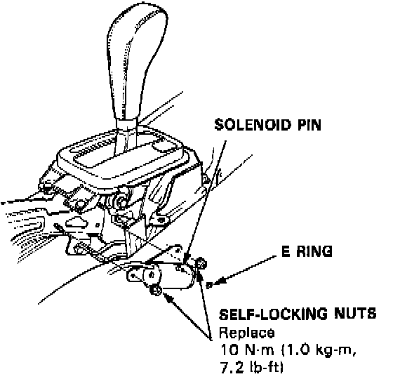
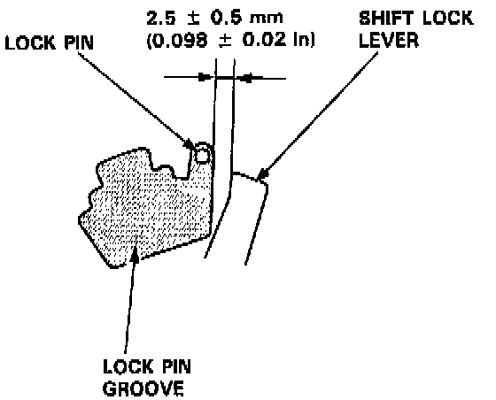
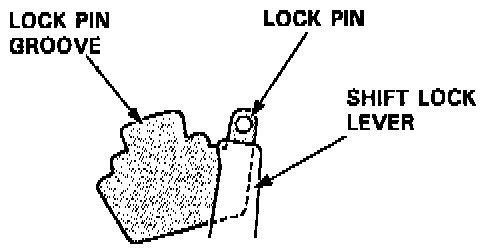

Shift Interlock Solenoid: Service and Repair
1mSHIFT LOCK SOLENOID REPLACEMENT1. Remove the E ring and the solenoid pin.
2. Remove the self.locking nuts and shift lock solenoid.

3. Install the shift lock solenoid in the reverse order of removal and adjust the position of shift lock solenoid.

When the shift lock solenoid is ON, check that there is a clearance of 2.5 +- 0.5 mm (0.098 -+ 0.02 in.) between the top of shift lock lever and the lock pin groove, then tighten the self-locking nuts.
NOTE: Use new self-locking nuts.

When the shift lock solenoid is OFF, make sure that the lock pin is blocked by the shift lock lever.
NOTE: Test for solenoid operation after assembling.